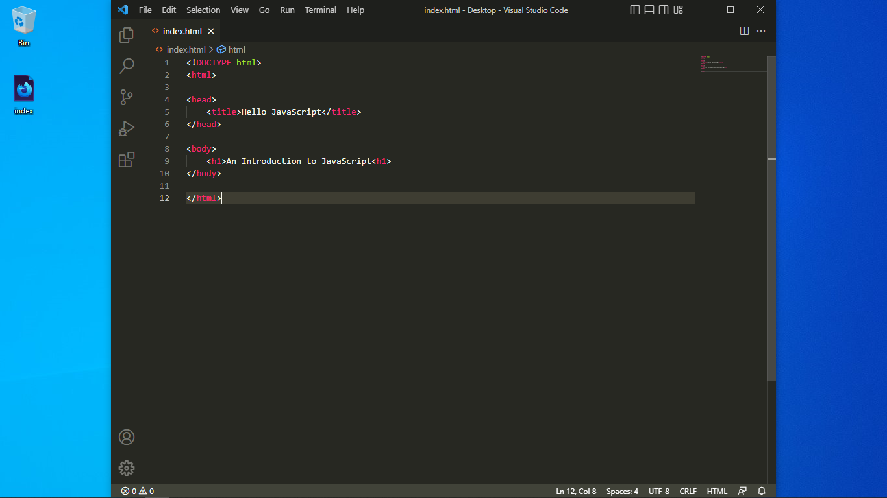
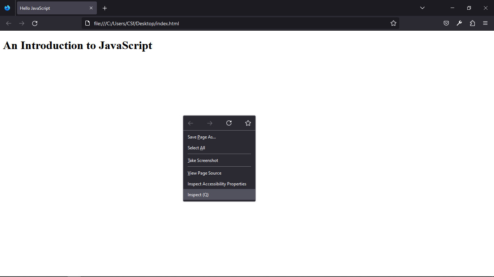
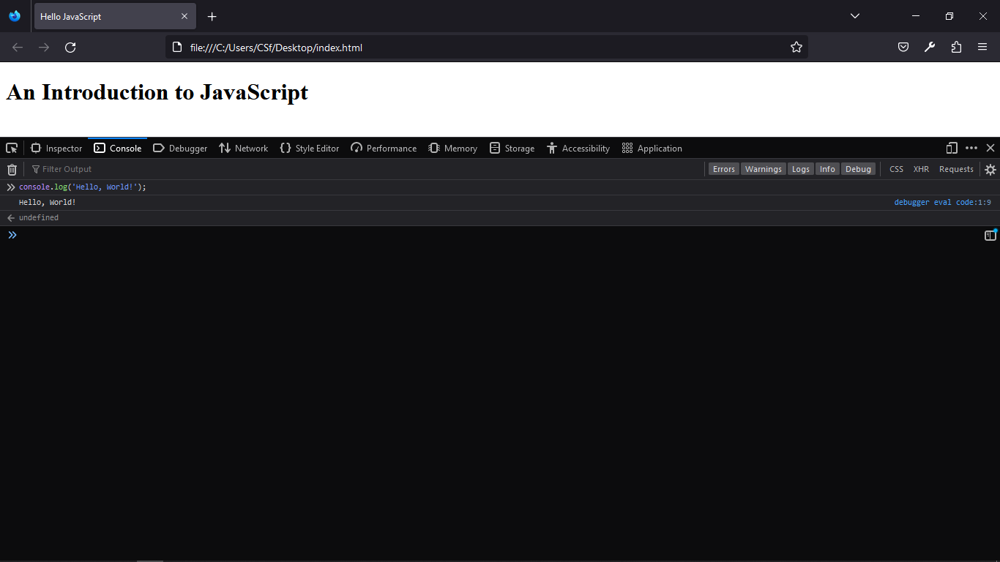
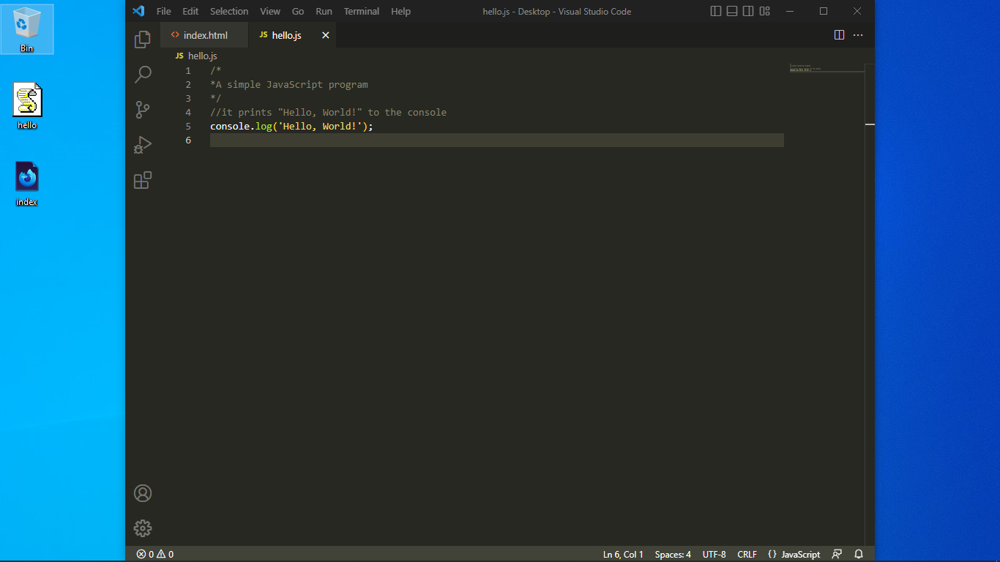
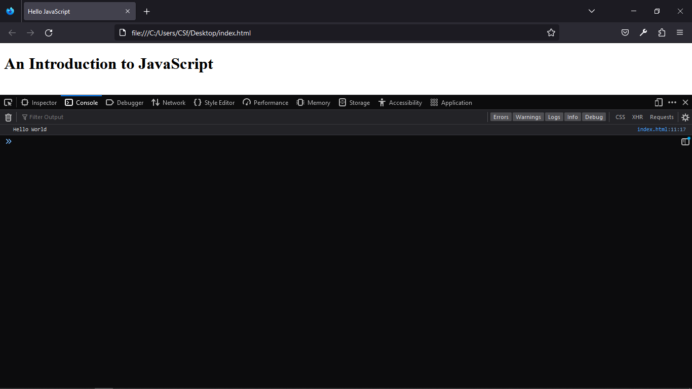

JavaScript is a high level programming language created in 1995. It is one of the most popular programming languages.
ECMAScript is the javascript specification
JavaScript runs in browsers, all browser come with the JavaScript Engine installed.
You need a simple Text Editor to write JavaScript programs.
/*
A simple JavaScript program
*/
//it prints "Hello, World!" to the console
console.log('Hello, World!');
Create a simple web page (html file)
Open it and Right click , select inspect or inspect element and then select the Console tab.
Write javaScript code on the console, then click Enter to execute it.
Alternatively you can write javaScript code between the <script> tags,
Or save the javaScript code in a seperate file with .js as the file extention. 
Link it to the html document using the <script> element
Check the Console tab for the output. If you make changes to the javascript code, you have to reload the page.
On mobile, use document.Write('') or prompt('') instead of console.log('');
Nodejs is a JavaScript runtime Enviroment, we can use it to run JavaScript outside the browser. Download Nodejs from https://nodejs.org and install it.
Open a new Terminal window and type node then click Enter to run Nodejs interactively. If
Nodejs was installed, you'll get a welcome message and the installed Nodejs version number. Write Javascript code at the
prompt > then click Enter
Alternatively open a new Terminal window in the directory where your javaScript file is located and type
node javaScriptFile then click Enter.
console.log() - buitin used to display in the console ; semi colon are not required statement terminator but recommended//Single line comment
/* multi-line
comment
*/